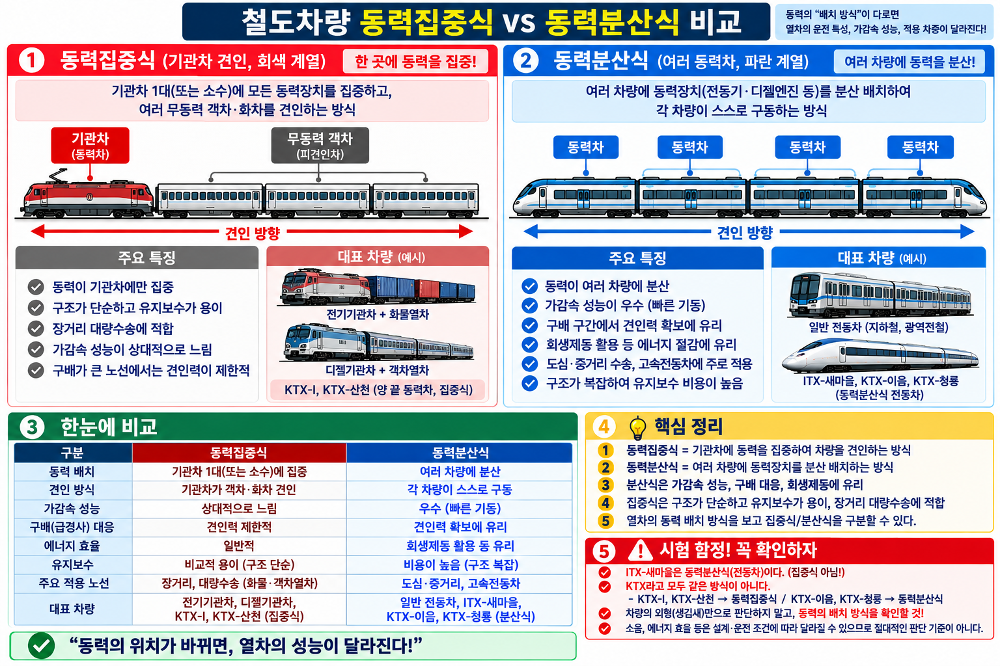

§0 선행 용어
동력집중식
동력장치를 기관차(또는 동력차) 1~2량에 집중하고 나머지는 부수차. 기관차 견인 방식.
동력분산식
동력장치를 여러 차량에 분산 배치. 각 차량(또는 다수 차량)에 견인전동기 장착. EMU 방식.
점착력
차륜과 레일 사이의 마찰력. 구동력 전달의 한계치. 동력분산식은 구동축이 많아 점착력 분산 활용에 유리.
부수차 (Trailer Car)
동력이 없는 차량. 동력집중식에서 기관차가 견인하는 객차·화차가 해당.
§1 핵심 비교표 (SOURCE48)
SOURCE48 · 개념48 — 기출핵심
동력집중식 vs 동력분산식
★★★
| 비교 항목 | 동력집중식 | 동력분산식 |
|---|
| 동력장치 위치 |
기관차(동력차) 집중 |
여러 차량에 분산 |
| 편성 구조 |
기관차 + 객차·화차 |
전동차(EMU) 자력 편성 |
| 국내 예시 |
새마을호, KTX-1 |
KTX-산천, KTX-이음, 일반 전동차 |
| 급구배 성능 |
불리 (구동축 적음) |
유리 (구동축 많아 점착력 분산 활용) |
| 점착력 활용 |
기관차 집중 → 상대적 불리 |
우수 (전체 차축 분산) |
| 가속 성능 |
상대적으로 낮음 |
우수 (분산 동력, 출발 부드럽) |
| 유지보수 |
기관차 집중 → 간단, 용이 |
각 차량 분산 → 복잡, 장소 많음 |
| 객화차 융통성 |
객차·화차 교체 용이 |
편성 고정, 교체 어려움 |
| 소음 (객실) |
상대적으로 적음 |
각 차량 전동기 → 소음 가능성 |
⚠ 함정: "동력집중식이 급구배에 유리하다" → ❌ 틀림. 동력분산식이 유리.
⚠ 함정: "동력집중식의 단점 — 소음이 크다" → ❌ 틀림. 소음은 동력분산식의 단점.
★ 핵심 대결: 급구배·가속 → 동력분산식 우세 / 유지보수·객화차 융통성 → 동력집중식 우세
★ 동력분산식 = EMU = 점착력 분산 활용 → 급구배·급곡선 운행에 유리
§2 VIS

※ VIS-093 이미지 준비 중
▲ VIS-093 — 철도차량 동력집중식·동력분산식 구성도
§3 시험 포인트
🎯 11-02 핵심 암기
- 동력집중식 = 기관차 견인 = 새마을·KTX-1 / 동력분산식 = EMU = KTX-산천·이음
- 급구배에 유리한 것 = 동력분산식 (구동축 많아 점착력 분산 활용)
- 유지보수가 간단한 것 = 동력집중식 (기관차만 집중 관리)
- 가속 성능 우수 = 동력분산식
- 객화차 융통성(교체 용이) = 동력집중식
§4 기출 DB 문항
📋 engineering id:11 · part:2 · grade:A+ · topic:동력집중식
기관차 1~2량에 동력장치를 집중 배치하고, 나머지 객차·화차를 견인하는 방식은?
- 동력분산식
- 동력집중식
- EMU 방식
- DMU 방식
📋 engineering id:12 · part:2 · grade:A+ · topic:동력분산식
동력분산식이 동력집중식보다 유리한 조건으로 옳은 것은?
- 유지보수가 단순하다
- 객화차 편성 융통성이 크다
- 급구배·급곡선 통과에 유리하다
- 소음이 작다
📋 rk_ch83_36 · topic:동력집중식 특징
동력집중식 특징으로 틀린 것은?
- 유지보수가 기관차에 집중되어 비교적 간단하다
- 객차·화차 교체가 용이하다
- 급구배 구간에서 동력분산식보다 유리하다
- 장거리·대량 수송에 적합하다
📋 rk_ch83_37 · topic:동력집중식 장점
동력집중식의 장점으로 옳지 않은 것은?
- 구조가 단순하고 유지보수가 용이하다
- 장거리·대량 수송에 적합하다
- 상구배(오르막) 구간에서 유리하다
- 객화차 편성 융통성이 크다
📋 rk_ch83_38 · topic:동력집중식 차량
동력집중식 차량으로 맞는 것은?
- KTX-산천
- 일반 전동차(EMU)
- 디젤기관차가 견인하는 무궁화열차
- 디젤동차가 견인하는 무궁화열차
📋 rk_ch83_39 · topic:동력분산식 장점
동력분산식의 장점으로 아닌 것은?
- 가속 성능이 우수하다
- 에너지 효율이 높다
- 정차·출발이 부드러워 승차감이 좋다
- 각 차량에 장치가 없어 객실 소음이 작다
정답 및 해설
📋 engineering id:11 · part:2 · grade:A+ · topic:동력집중식
정답: ② 동력집중식
동력집중식: 기관차에 동력 집중 → 객차 교체 용이, 유지보수 단순. 단점: 급구배·급곡선 불리.
📋 engineering id:12 · part:2 · grade:A+ · topic:동력분산식
정답: ③ 급구배·급곡선 통과에 유리하다
동력분산식: 여러 차축에 동력 분산 → 점착력 분산·활용 유리 → 급구배·급곡선에 우수.
📋 rk_ch83_36 · topic:동력집중식 특징
정답: ③ 급구배 구간에서 동력분산식보다 유리하다
동력집중식은 구동축이 적어 급구배에서 동력분산식보다 불리하다.
📋 rk_ch83_37 · topic:동력집중식 장점
정답: ③ 상구배 구간에서 유리하다
동력집중식은 상구배에서 불리하다(유리한 것은 동력분산식).
📋 rk_ch83_38 · topic:동력집중식 차량
정답: ③ 디젤기관차가 견인하는 무궁화열차
동력집중식: 디젤·전기기관차가 객차를 견인. 동력분산식: EMU·디젤동차 등 각 차량에 동력 분산.
📋 rk_ch83_39 · topic:동력분산식 장점
정답: ④ 각 차량에 장치가 없어 객실 소음이 작다
동력분산식 단점: 각 차량에 전동기·전기장치 설치로 객실 소음 증가 가능. 소음이 작다는 설명은 틀림.